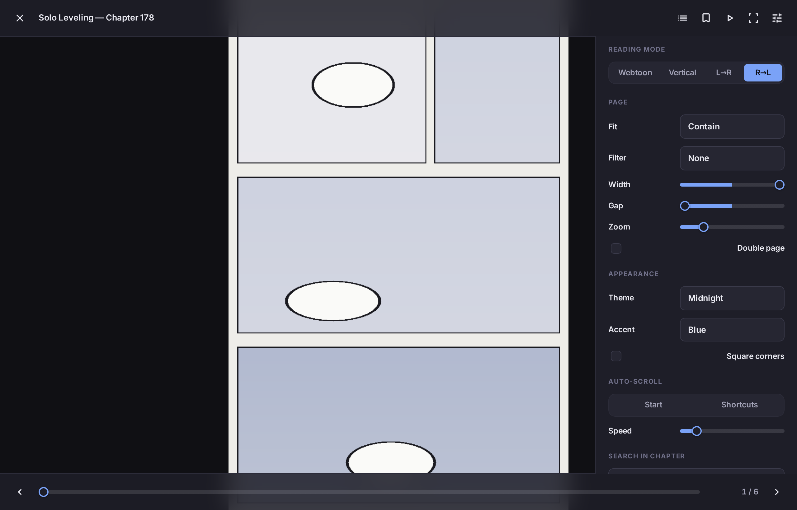
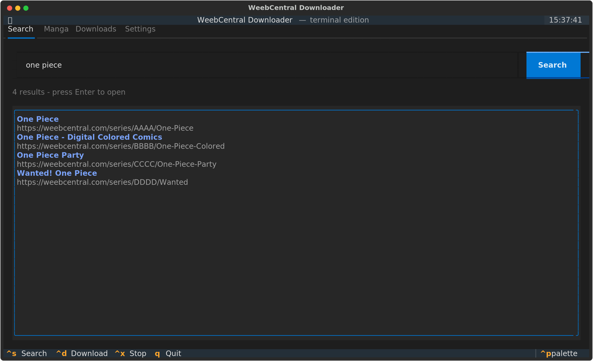

image
Hotlink-protected art
Covers that 403 without the right referrer are fetched server-side and inlined, so they show up instead of a blank tile.
Paste a link from any of 19 sources. ReaderM works out which site it is, pulls the chapters, packs them into a CBZ, PDF or EPUB — and then opens them in a manga reader forked from Foliate, with webtoon scrolling, right-to-left paging and nine themes. Same engine behind a terminal menu, a full-screen TUI, a scriptable CLI, a phone server and an OPDS catalog.
# search every source at once $ readerm search "solo leveling" --type manhwa # Source Title 1 MangaDex Solo Leveling 2 Weeb Central Solo Leveling: Ragnarok # grab result 1, no URL needed $ readerm search "solo leveling" --download 1 ✓ 179 chapters Solo Leveling - Chapters 001-179.cbz
Downloading images is the easy bit. Nearly all of the work is in what the sites do to stop you — and in not losing an hour of progress when one of them misbehaves.
The source is detected from the URL, including sites with tracking
parameters — which used to silently return zero chapters. Aggregate
installs resolve too, so madara.toonily is just Toonily.
Base64 payloads, decoy search endpoints, obfuscated readers and randomly named JS variables — each handled per source, each verified against the live site rather than guessed at.
Covers that 403 without the right referrer are fetched server-side and inlined, so they show up instead of a blank tile.
Queue multiple series and download them in parallel. Every progress event is tagged with its job, so two books never mix their chapters.
Chapter-level checkpoints, atomic writes and a per-job journal. A crash costs you the current chapter, not the run.
Type, status, genre and chapter-count filters — with unknown values kept rather than silently erasing whole sources from the results.
One engine underneath, one settings file. Change something in the app and the CLI sees it too.
Cover grid, drag-to-file bookmark folders, a live grouped queue, themes and a passcode lock.
Answer a prompt with a number. b goes back,
q quits. No extra install needed.
A keyboard-driven full-screen interface for working over SSH, built on Textual.
Everything the app does, plus --json and
--urls for pipes.
The same interface over Wi-Fi. Every download still runs on the host PC, so leaving range does not stop it.
Your downloads as a standard catalog, so Readest, Panels or KyBook can browse and read them.
Each one is a small module reading the same registry. Adding another does not touch the CLI, the menu or the app.
Adult sources are tagged, hidden by Safe mode, and can be disabled individually. Weeb Central and Setsu Scans sit behind Cloudflare and need FlareSolverr; without it they fall back to a stored snapshot rather than stalling the other eighteen.
Enough flags to script with, short enough to remember.
The desktop app, and the terminal it grew out of.





Python 3.9 or newer. That is the whole prerequisite.
Or download the ZIP from the releases page.
git clone https://github.com/Compromisee/ReaderM.git
[all] adds the desktop app and the TUI.
cd ReaderM && pip install -e ".[all]"
Start anywhere; they share one config.
readerm-gui
The base install covers the CLI and the menu. Optional extras:
[gui] for the desktop app, [tui] for the
full-screen terminal UI, [tray] for background downloading
from the system tray.